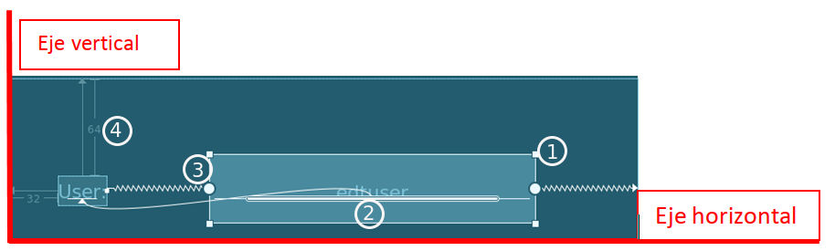
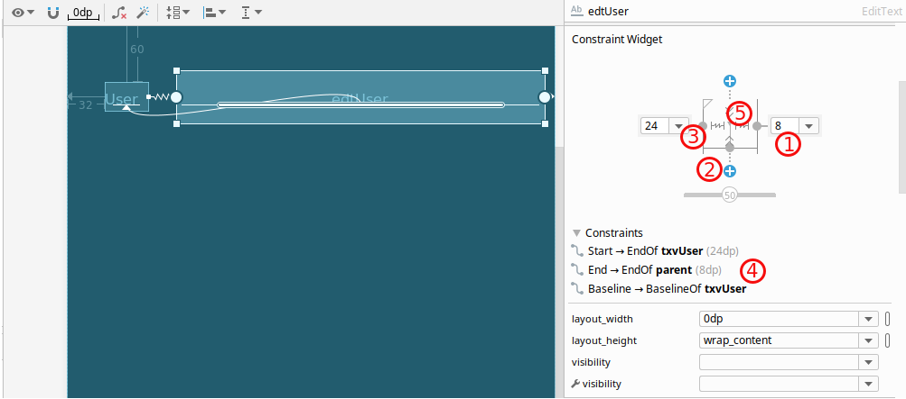

Para posicionar una vista en ConstraintLayout se debe añadir una restricción (constraint) con respecto a otra vista o bien con respecto al nodo raíz y debe cumplir las siguientes reglas:
- Cada vista debe tener al menos dos restricciones: una para el eje horizontal (comienzo y final) y otra restricción en el eje vertical (arriba, abajo y línea base).
- Al crear una restricción se debe realizar entre puntos de anclaje que compartan el mismo plano, es decir, un punto de anclaje al comienzo de una vista sólo se puede unir a otro anclaje que esté al comienzo o final de otra vista.
- Cada punto de anclaje sólo puede utilizarse para crear una sola restricción, pero puede ser el destino de varias restricciones siempre y cuando sean de vistas diferentes.

Captura del IDE Eclipse. Eclipse Public License
A continuación vamos a analizar los elementos que aparecen en la imagen:
- Guías cuadradas: aparece en las esquinas de
edtUsery se usan para ajustar el tamaño de la vista en dp. - Guía base: es el rectángulo con orillas redondas que se encuentra dentro de
edtUsery se usa para alinear el contenido de la vista con la línea base detxvuser. Mediante este atributo se establece queedtUserse posiciona a la misma altura quetxvUseren el eje y:app:layout_constraintBaseline_toBaselineOf="@+id/txvUser" - Restricciones: son los puntos de anclaje y se representan como círculos. Cuando hay una restricción entre dos vistas puede ser:
- Una línea en zig-zag. Este caso ocurre cuando hay dos restricciones que actúan como fuerzas opuestas que separan el componente y hay espacio sobrante a ambos lados del componente porque bien el ancho o el alto tiene asignado el valor
wrap_content. Es lo que sucede con el componenteedtUser. A la izquierda hay una restricción que indica que la vista comienza donde finalizatxvUsery a la derecha hay otra restricción que indica que finaliza en el padre oparent. Si este componente no ocupa todo el ancho de la ventana, ¿dónde se coloca finalmente la vista? Lo que hace el sistema es centrar la vista en el espacio disponible.app:layout_constraintStart_toEndOf="@+id/txvUser"app:layout_constraintEnd_toEndOf="parent" - Una línea continua. En el caso de
txvUserno hay dos restricciones opuestas, sino que se sitúa al inicio del padre y en la parte de arriba del padre.app:layout_constraintStart_toStartOf="parent"app:layout_constraintTop_toTopOf="parent" - Márgenes. Aparecen señalados mediante líneas continuas junto con el valor del margen en dp. La vista
txvUsertiene un margen superior de 60dp y un margen inicial de 36dp.android:layout_marginStart="32dp"android:layout_marginTop="64dp"
- Una línea en zig-zag. Este caso ocurre cuando hay dos restricciones que actúan como fuerzas opuestas que separan el componente y hay espacio sobrante a ambos lados del componente porque bien el ancho o el alto tiene asignado el valor
Si seleccionamos el componente edtUSer aparece el widget Attributes y se pueden realizar las siguientes operaciones:
- Modificar los márgenes que se han aplicado. Mediante el desplegable se puede seleccionar valores por defecto o bien escribir directamente el valor del margen.
- Crear conexiones con respecto al padre.
- Eliminar una restricción ya creada pulsando sobre el círculo o punto de anclaje.
- Seleccionar las restricciones que se han creado en la pestaña Design del Editor.
- Modificar el tamaño de los componentes. Estos símbolos representan cómo se calcula el tamaño de la vista. Si haces clic en el símbolo cambiarás entre los diferentes tipos de configuración:
 Fixed: se ha especificado un tamaño fijo en el cuadro de texto en dp.
Fixed: se ha especificado un tamaño fijo en el cuadro de texto en dp. -
 Wrap Content: el tamaño de la vista será el tamaño necesario para poder mostrar el contenido.
Wrap Content: el tamaño de la vista será el tamaño necesario para poder mostrar el contenido.  Match Constraints: la vista se expande tanto como sea posible para cumplir con las restricciones de cada lado después de aplicar los márgenes de la vista. Para que se cumpla esta restricción se debe asignar el valor 0dp a
Match Constraints: la vista se expande tanto como sea posible para cumplir con las restricciones de cada lado después de aplicar los márgenes de la vista. Para que se cumpla esta restricción se debe asignar el valor 0dp a layout_widthsi se quiere que se expanda horizontalmente o alayout_heightpara que se expanda verticalmente.

Captura del IDE Eclipse. Eclipse Public License